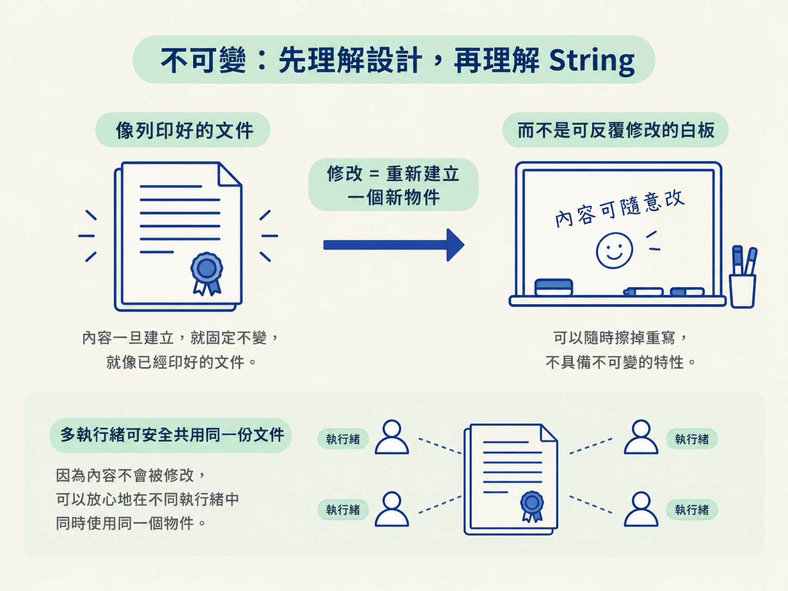
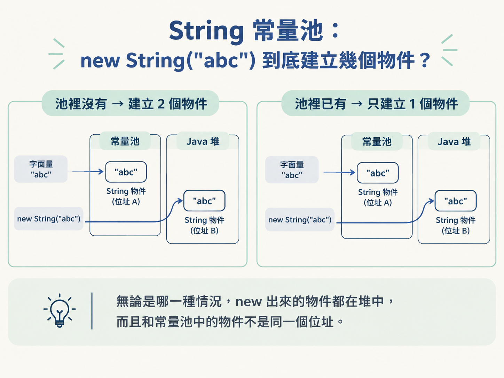
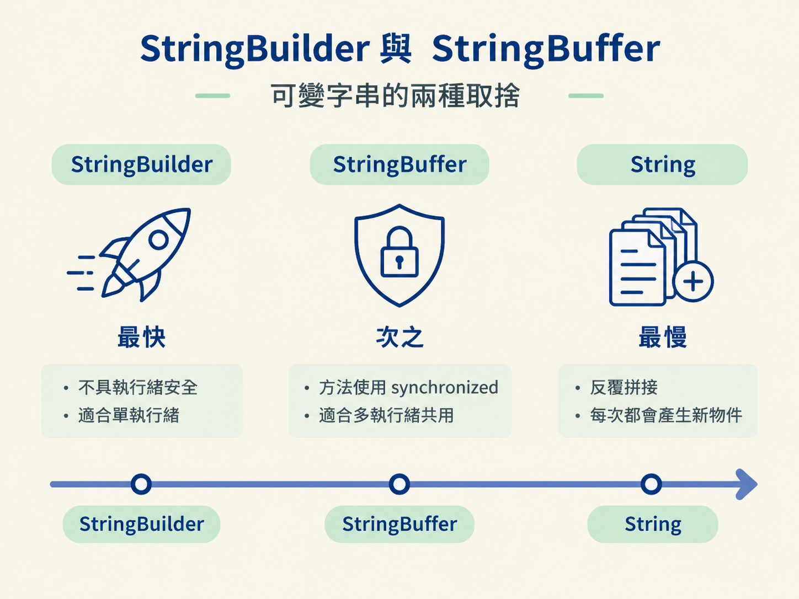
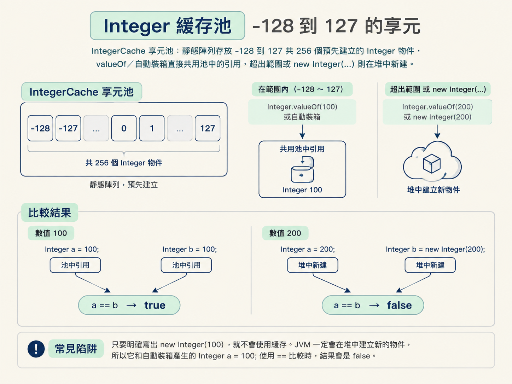
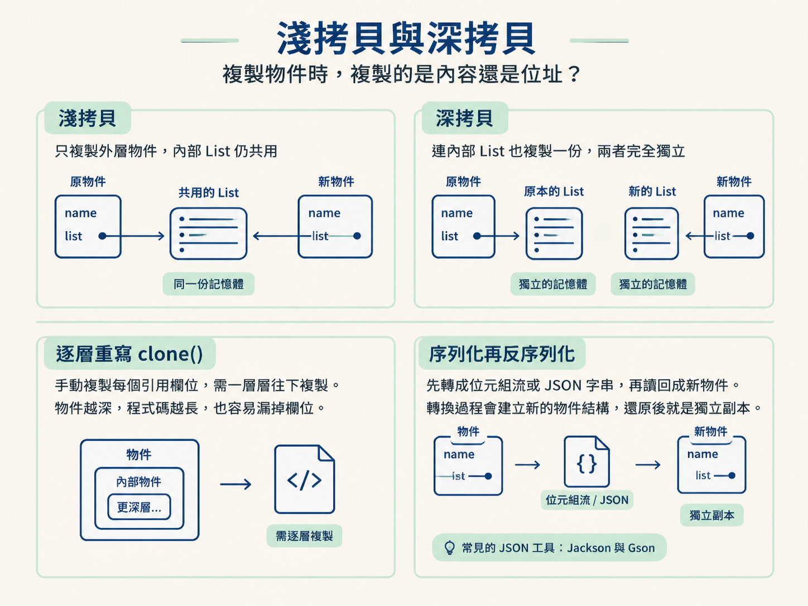

這一節要把幾個常在面試與實務中一起出現的問題串起來：不可變物件有什麼好處？String 常數池和 intern() 在不同 JDK 版本有什麼差異？StringBuilder 與 StringBuffer 該怎麼選？包裝類與自動裝箱有哪些陷阱？還有，物件複製時的深拷貝與淺拷貝到底差在哪裡？
== 有時真、有時假？上一節我們拆開了物件比較，知道 == 比較的是位址，而不是內容。但你可能很快就遇到一個更奇怪的現象：同樣是 String，有時候 a == b 是 true，有時候內容明明一樣，結果卻是 false。
這不是 Java 壞掉了，而是你碰到了字串常數池。要理解常數池，就不能只背「String 是不可變物件」這句定義，還要看清楚物件是怎麼被建立、儲存與共用的。這也就是這一節要處理的問題。
我們會沿著一條線往下看：先從「不可變」這個設計選擇開始，理解它為什麼讓 String 能被共用；接著看 String 常數池與 intern()；再比較 StringBuilder 和 StringBuffer 的取捨。之後換到包裝類，看看為什麼 Integer 也有快取池，以及自動裝箱在迴圈中為什麼可能拖慢系統。最後，再補上物件複製最常見的陷阱：淺拷貝。
這些主題看起來互不相干，其實都在回答同一個問題：當你寫下一行 Java，JVM 到底建立了幾個物件？這些物件能不能被共用？
所謂不可變（immutable），是指物件建立之後，內容就不能再被修改。String 是最典型的例子。它的底層儲存陣列會被 final 修飾；Java 9 之後則改成使用 byte 陣列。無論採用哪種實作，字串建立完成後，裡面的內容就固定了。
你可能會想：「我明明寫過 s = s + \"abc\";，s 不是變了嗎？」
變的其實是變數 s 這個參考，不是原本的 String 物件。真正的過程是：JVM 另外建立一個新的 String，把舊內容和 \"abc\" 拼接起來，然後讓 s 改為指向這個新物件。舊的字串物件仍然存在，只是沒有變數再指向它，之後可能被垃圾回收。
不可變帶來的好處很實在。因為內容不會改變，多個執行緒可以同時讀取同一個 String，不需要額外加鎖，所以它天生具備執行緒安全的特性。也因為內容不會變，同樣的字串才能放心放進常數池，讓許多地方共用同一個物件。
可以把不可變物件想成列印好的文件，而不是還能反覆修改的白板。文件內容要改，不能直接在原件上擦掉重寫，只能重新印一份。

new String("abc") 到底建立幾個物件？既然字串內容不會改，JVM 就能做一件很省空間的事：把字串字面值集中管理，讓內容相同的字串共用同一份。這個集中管理的地方就是字串常數池（String Pool）。
因此，下面這段程式的 a == b 會是 true：
String a = "abc"; String b = "abc";
原因不是 Java 把兩個字串內容拿來比較，而是兩個變數都指向常數池中同一個 String 物件。
那麼，new String("abc") 會建立幾個物件？答案是一個或兩個，取決於執行到這行之前，常數池裡是否已經有 "abc"：
"abc"：建立兩個物件。JVM 會先為字面值 "abc" 建立一個 String 物件，並把它的引用放進常數池，這是第一個物件。接著看到 new，又會在堆中建立第二個 String 物件，內容從池中的字串複製過來。"abc"：建立一個物件。字面值直接使用常數池裡既有的引用，不需要再建立新的字面值物件；只有 new 這一步會在堆中建立一個新物件。無論是哪一種情況，new 出來的物件都在堆中，而且和常數池中的物件不是同一個位址。

intern()：手動把字串交給常數池管理String.intern() 可以看成是你手動把字串送進常數池的方法。它會先到池裡查找：
它的實作會隨 JDK 版本演進。核心差異在於：入池時，是複製一個物件進去，還是只在池裡記錄堆中物件的引用。
| 版本 | 常數池位置 | 入池策略 | intern() 回傳的引用 |
|---|---|---|---|
| JDK 1.6 | 永久代（PermGen） | 把堆中物件複製一份進去（深拷貝） | 與原物件不同，一個是副本、一個是原件 |
| JDK 1.7 | Java 堆 | 只在池裡存指向堆中物件的引用（淺拷貝） | 與原物件相同，指向同一個物件 |
| JDK 1.8 | Java 堆，邏輯上與 1.7 相同 | 與 1.7 完全一致 | 與原物件相同 |
JDK 1.7 把常數池搬到 Java 堆中，並改成主要保存引用，這也降低了舊版大量呼叫 intern() 時撞上 OOM: PermGen space 的機會。這條「記憶體區域搬遷」的線索，之後在 JVM 記憶體章節還會再遇到。
String 適合讀取，不適合反覆修改。如果你在迴圈裡使用 + 拼接字串，每次拼接都可能建立新的 String 物件。迴圈跑得越多，暫時物件就越多，記憶體配置與 GC 的壓力也會跟著上升。
因此，Java 提供了兩個可變字串類別：StringBuilder 與 StringBuffer。它們底層都使用可擴容的陣列，繼承自 AbstractStringBuilder；呼叫 append 時，會直接在原本的物件上修改，而不是每次都建立新的 String。
| 類別 | 可變性 | 執行緒安全 | 效能 | 適用場景 |
|---|---|---|---|---|
| String | 不可變，拼接會產生新物件 | 天生安全，因為內容不能改 | 反覆拼接時最差 | 常數、少量且不常變動的字串 |
| StringBuilder | 可變 | 不安全，方法沒有加鎖 | 最好 | 單執行緒拼接，包含絕大多數業務程式 |
| StringBuffer | 可變 | 安全，方法使用 synchronized | 較差，因為頻繁加鎖與解鎖 | 多執行緒同時修改同一個字串 |
可以這樣記：單執行緒拼接用 StringBuilder；只有在多執行緒真的共用同一個可變字串時，才考慮 StringBuffer。若以頻繁拼接的效能來看，大致是：
StringBuilder > StringBuffer >>> String

Java 保留了八種基本型別，例如 int 和 boolean，讓常見的數值與真假判斷能以較低成本執行。不過，基本型別不是物件，不繼承 Object，也沒有方法。
當某些 API 需要物件時，就要使用包裝類，例如用 Integer 包住 int。可以把包裝類想成替基本型別穿上一件「物件外套」。它主要解決三類問題：
Object，所以 List<int> 不合法，只能寫成 List<Integer>。只要使用集合框架，就很難避開包裝類。int 的預設值是 0。但在資料庫映射或 API 傳參時，「使用者沒有填年齡」和「使用者填了 0 歲」是兩種不同情況。Integer 可以是 null，因此能表示資料缺失。Integer.parseInt("123")、Integer.toBinaryString(10)，也提供 Integer.MAX_VALUE 這類常數。代價是，包裝類畢竟是物件，需要物件頭，也需要在堆中配置空間。因此，如果程式正在做大量數值運算，通常仍應優先使用基本型別。
自動裝箱與拆箱是 Java 5 引進的語法糖。它不是 JVM 在執行時突然施展魔法，而是編譯器在編譯階段先替你改寫程式碼。
Integer a = 10; 會被改寫成 Integer a = Integer.valueOf(10);int b = a; 會被改寫成 int b = a.intValue();這讓程式碼更簡潔，但用得太頻繁，就會冒出三個問題。
最常見的是效能問題。如果在迴圈裡不斷裝箱，可能瞬間建立成千上萬個暫時物件，讓 GC 忙著清理，甚至造成系統停頓。
再來是空指標問題。拆箱本質上是呼叫 xxxValue()。如果包裝類的值是 null，呼叫這個方法就會拋出 NullPointerException。
還有一個是 == 的比較陷阱，這和 Integer 的快取池有關。
Integer 的快取機制本質上是享元模式（Flyweight Pattern）：把常用而且重複的小物件先建立好，之後直接共用，而不是每次都重新配置。
Integer 裡有一個靜態內部類別 IntegerCache。類別第一次載入時，靜態區塊會執行一個迴圈，先建立 -128 到 127 的 256 個整數物件，並放進陣列中。
之後呼叫 Integer.valueOf(i)，也就是自動裝箱時，程式會先檢查 i 是否位於這個區間：
Integer a = 100; Integer b = 100; 的 a == b 會是 true。Integer a = 200; Integer b = 200; 的 a == b 會是 false。這個範圍的下限 -128 是固定的，不能調整；上限預設是 127，可以透過 JVM 參數 -XX:AutoBoxCacheMax=size 調大，例如調整到 1000。若想把上限調得小於 127，JVM 會忽略這個設定。
還有一個常見陷阱：只要明確寫出 new Integer(100)，就不會用到快取。JVM 一定會在堆中建立新的物件，所以它和自動裝箱產生的 Integer a = 100; 使用 == 比較時，結果會是 false。

0.1 + 0.2 不等於 0.3？物件與數值處理中，另一個經典坑是浮點數精度。實際執行：
System.out.println(0.1 + 0.2);
輸出結果不是 0.3，而是 0.30000000000000004。
原因是電腦使用二進位儲存數字。像 0.1 這種十進位小數，轉成二進位後會變成無限循環小數；但 float 只有 32 位、double 只有 64 位，儲存空間有限，只能截斷成一個近似值。兩個近似值相加後，自然不一定剛好等於 0.3。
這在金融場景可能造成嚴重問題。單筆誤差看起來很小，但大量累加後，帳目可能對不上，甚至讓財報差上幾分錢。因此，浮點數不能直接使用 == 比較，也不適合直接拿來處理金額。
正確做法是使用 BigDecimal。它會以能精確表示的方式處理十進位數值。不過，建立 BigDecimal 時也有一個重要細節：務必使用字串建構子 new BigDecimal("0.1")，或使用 BigDecimal.valueOf(0.1)。
不要寫成 new BigDecimal(0.1)。因為傳入的 0.1 早已是二進位浮點數的近似值，BigDecimal 只是把這個不精確的結果照實保存下來，等於一開始就把誤差帶進去了。
再來看物件複製。Object.clone() 是一個 native 方法，預設採用的是淺拷貝：建立一個新物件，把原物件每個欄位的值按位複製過去。
對基本型別欄位來說，複製的是數值本身，因此新舊物件彼此獨立。但對引用型別欄位來說，複製的是位址。結果就是，新物件與舊物件仍然指向堆中的同一個內部物件。
例如，一個物件裡有一個 List。完成淺拷貝後，雖然外層物件不同，但兩個物件裡的 List 仍然是同一份。你往新物件的 List 加入一個元素，舊物件的 List 也會跟著多出這個元素，這就是淺拷貝最容易踩到的地方。
如果希望新舊物件完全獨立，就需要深拷貝。常見方式有兩種：
clone()：在 clone() 中手動複製每個引用欄位。如果內部物件還包含其他引用，就必須繼續往下複製。物件層級一深，程式碼就會變長，也很容易漏掉某個欄位，因此現在較少使用。
不可變是 String 的設計核心。因為內容不會改，字串可以安全共用，也天生具備執行緒安全的特性，常數池才有成立的基礎。
new String("abc")會建立一個或兩個物件，取決於常數池中是否已經有這個字面值。intern()則從 JDK 1.6 的「複製物件進永久代」，演變成 JDK 1.7 起主要在堆中保存引用。字串拼接時，單執行緒使用 StringBuilder；只有多執行緒共用同一個可變字串時，才考慮 StringBuffer。包裝類讓基本型別能放進集合、能表達
null，也能提供工具方法；但自動裝箱在迴圈裡可能製造大量物件，拆箱遇到null則會拋出 NPE。
Integer的 -128 到 127 快取，會讓==的結果取決於數值是否位於快取範圍內。金額處理應使用 BigDecimal，並透過字串建構子或valueOf建立。物件複製預設是淺拷貝；若要讓內部物件也彼此獨立，就需要深拷貝。
到這裡，我們處理的是平常直接寫在程式碼裡的物件。但框架替你完成的許多工作，往往不是靠普通語法完成的。下一節會換一個角度：看看反射如何讓程式在執行時才決定要呼叫誰，動態代理如何在執行時生成類別，以及泛型為什麼到了執行時會「消失」。